Computer Basics Unit
Introduction to Computers
The Fundamental Concept
Computer = power + simplicity
A Brief History on Computers
A Visual HistoryTrailblazers in Computer History
- Ada Lovelace was the first human to create an algorithm intended to be carried by the first modern computer, the Analytical Engine. Because of this, she is often regarded as the first computer programmer.
- Grace Hopper was the first human to create a compiler for a Programming language and the first programmer of Mark I computer, an electro-mechanical computer based on Analytical Engine.
- Katherine Johnson is a physicist, space scientist, and mathematician who contributed to the United States' aeronautics and space programs with the early application of digital electronic computers at NASA.
Computer Basics
Vocabulary Review in Handbook
DLH: Page 5
Typing
Learning how to touch type efficiently is one of the most important skills you can gain as a software developer. It takes practice.
Our typing course: Typing.com
DLH: Page 7
Typing Tips
The standard keyboard is called the QWERTY keyboard because of the letter sequence on the keyboard. It is important to have a good typing posture.
- Head up. If your head tilts too much toward the screen it can put a strain on your neck and cause headaches.
- Relax your shoulders
- Keep your elbows close to your body
- Curve your fingers slightly over the keys but keep your wrists flat
- Try to keep your feet on the floor and avoid crossing your legs.
Typing: Hand Placement
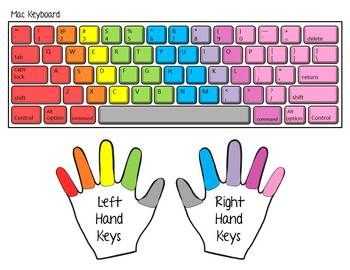Typing Goals
- Use all 8 fingers to type (use your thumb for the spacebar)
- Use the proper fingers on the proper keys.
- Always return your fingers to the home row when resting. Your left index finger goes on the F key, and your right index finger goes on the J key. The rest of your fingers line up next to each other.
- Notice how the F and J keys have bumps on them. Be able to use the bumps to place your fingers on the home row without looking at the keyboard.
- Be able to type without looking at the keyboard
Typing Assessment
Go to Typing.com for an initial 3-minute assessment.
- Make sure to login to save this result.
- This initial assessment is a baseline for improvement.
Typing Badge
To receive your Typing Badge, you must:
- Type for 3 minutes.
- Type at a speed of at least 45 wpm.
- Have at least 98% accuracy.
Weekly Typing Goals
Based on your current typing score, set a weekly typing goal.
- Set an endurance goal: e.g., add [x] additional minutes of typing on top of what you usually do per day per week.
- Set a speed goal: Perhaps improve by [x] wpm per week.
- Set an accuracy goal: Perhaps improve [x]% in accuracy per week.
- Story Time: Typing tips from our TA.
Typing Tips
- Take 5 to 10 minutes out of your break or lunch to practice typing.
- Practice typing when you get to our training early or when you stay after.
- A couple days a week during Phase 1, we will set aside time during training time for typing practice.
- Do NOT practice typing when lecture is happening. Focus on the new content.
Computer Hardware
Goal: Understand the Big Picture
DLH: Page 8
What's Inside Your Computer?
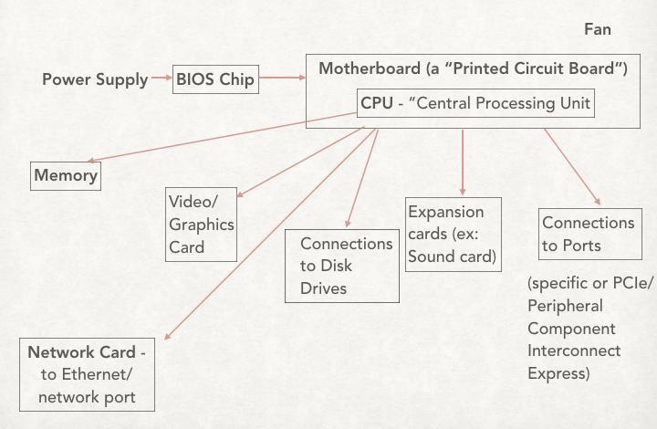Parts of the Computer: Piece by Piece
Motherboard
Directs information to and from computer parts plugged into it via ports
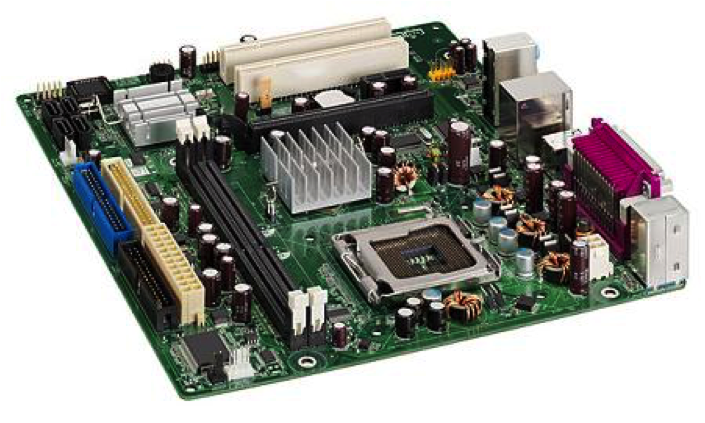Parts of the Computer: Piece by Piece
CPU: Central Processing Unit
The electronic circuitry within a computer that carries out the instructions of a computer program by performing the basic arithmetic, logical, control and input/output (I/O) operations specified by the instructions.
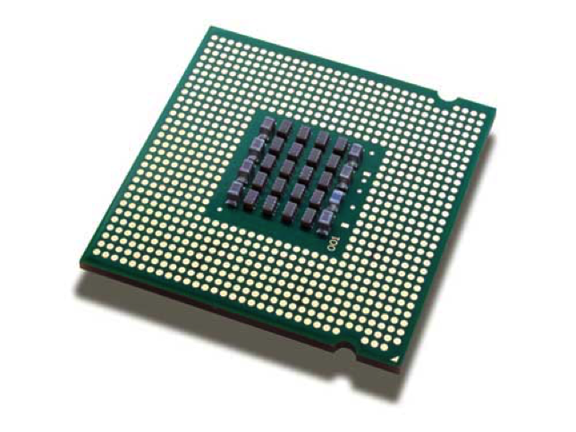The Original CPU
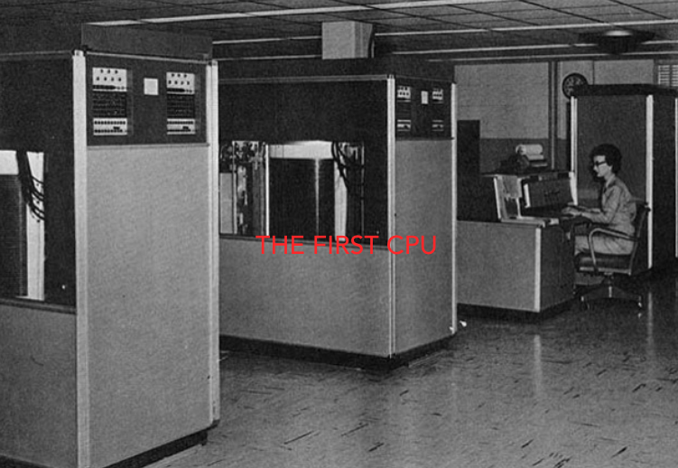Parts of the Computer: Piece by Piece
CPU: Central Processing Unit (Continued)
- Clock speed (Cycles per second measuring Input to Output rate)
- Cores (Think “lanes on a highway”. This matters because it enables parallel computing.What might we want to process in parallel?)
- Cache (Mini-memory on CPU for frequently accessed information)
Parts of the Computer: Piece by Piece
Graphics Card
- This houses the dedicated GPU (Graphics Processing Unit), which is a specialized processor used for monitor displays (and VR!) and other visual tasks.
Parts of the Computer: Piece by Piece
BIOS - Basic Input/Output System
- The program a personal computer's microprocessor uses to get the computer system started after you turn it on.
- It also manages data flow between the computer's operating system and attached devices, such as the hard disk, video adapter, keyboard, mouse and printer.
How is Information Stored? Memory!
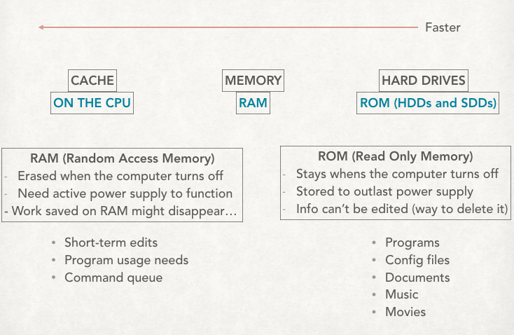What's the Difference Between Memory and Storage?
Memory
- MEMORY (RAM) is readable with equal speed no matter where it is LOCATED. Files in active edit and edits are held here prior to a “save.” You lose it if the machine crashes! It can be stored in the following ways: 8GB, 16GB, 24GB.
Storage
- STORAGE (ROM) takes time to “spin up” but stays when the power is off. Files are saved here when you hit “save.”
- HDD (Hard Disk Drive) - uses a spinning magnetic disk
- SSD (Solid State Drive) - uses a grid of electrical flow "cells" in "pages" in "blocks". (SSD always writes to a new block.)
What happens when a file is "deleted"?
Watch here'Becoming the Computer' Activity
Ports
In computer hardware, a port serves as an interface between the computer and other computers or hardware devices.
Computer ports have many uses, to connect a monitor, webcam, speakers, or other additional devices.
Ports on Your Computer
Let's take a tour and play an iSpy game with your computer!
Input and Output Devices
Play this sorting game.
- Make a copy of the game.
- Partner up.
- Discuss and sort.
Time to Break It Apart!
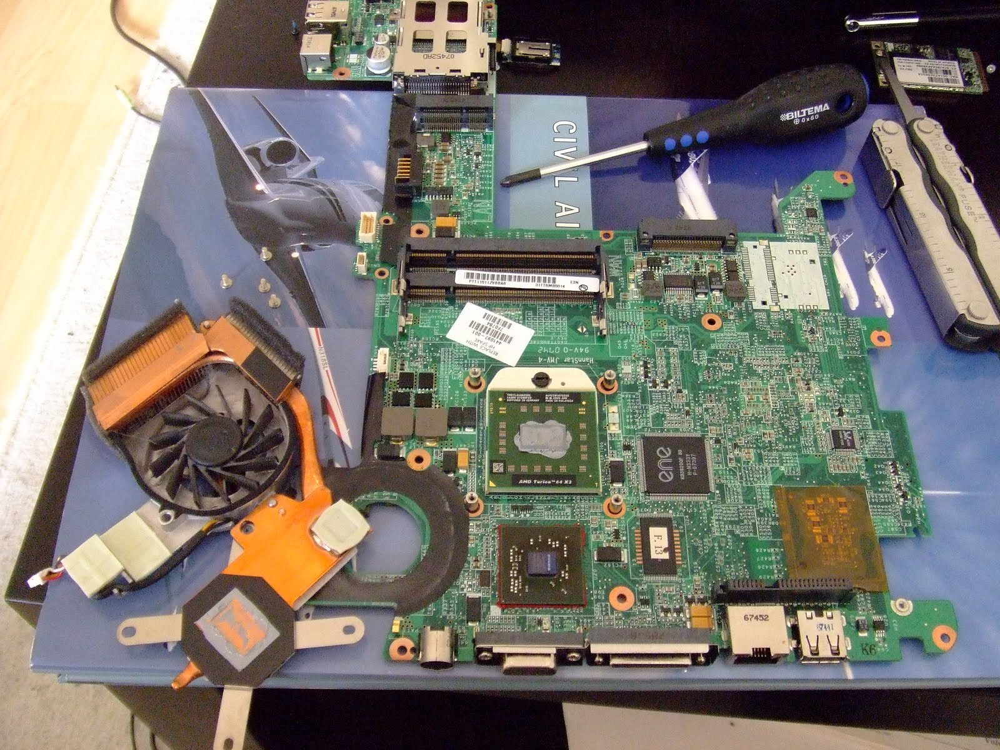Computer Checklist Exercise
Exercise Time!

DLH: Page 13
Exercise Submission Instructions on next slide.
Computer Hardware and Software
Play this sorting game.
- Make a copy of the game.
- Partner up.
- Discuss and sort.
Team Leaders
- Throughout the program, you will be asked to submit exercises to your Team Leaders (TLs).
- Communicating with TLs about your progress is similar to reporting your progress as engineers to (Software) Product Managers.
- Likewise, you will switch TLs periodically, just as engineers do in the industry when they report to different Product Managers (PMs) regarding different projects.
TL Assignments by the TLs
Now, submit the exercise using these instructions.
Intro to Software: The Operating System

DLH: Page 14
Different types of Operating Systems

What does an Operating System do?
- Provide an environment in which a user can execute programs
- Make the computer system easy to use
- Allow users to use the computer hardware in an efficient manner
OS Process Managers
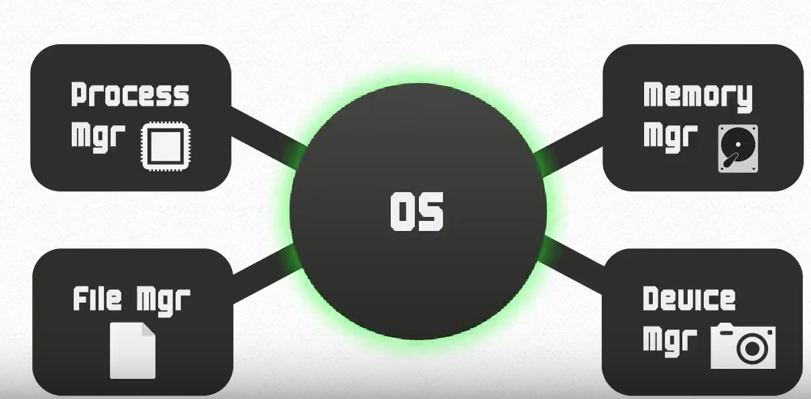Kernel (OS core)
- Kernel constitutes the central core of a computer's operating system.
- It has complete control over everything that occurs in the system.
- It is the first program loaded on startup.
- It then manages the remainder of the startup, as well as input/output requests from software, translating them into data processing instructions for the CPU.
Assembler (OS bits spitter)
- The Assembler is a program that takes basic computer instructions and converts them into a pattern of bits that the computer's processor can use to perform its basic operations.
- It translates source code into binary code.
- It can also be called a compiler.
Firmware (OS bossware)
- Firmware is a type of software that provides control, monitoring and data manipulation for device application.
- It explains to the assembler/compiler how to execute the necessary instructions for the device to communicate with other computer hardware.
- It tells everything *how* to run.
Kernel, Assembler, Firmware!
Together the Kernel, Assembler, and Firmware make up the vital bridge of communication between hardware and software applications.
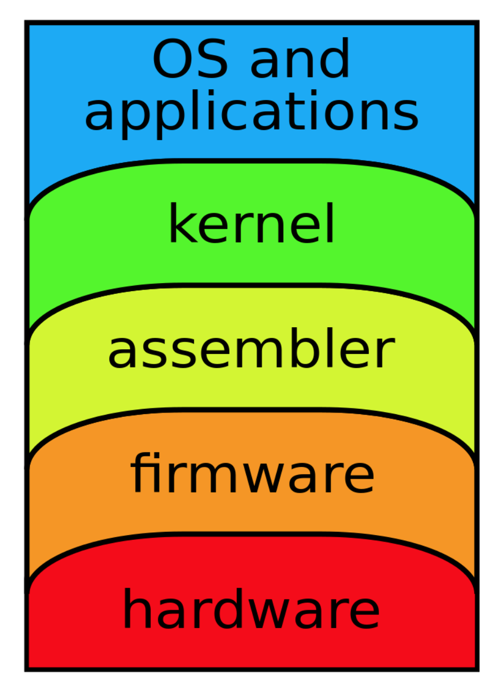Hardware and Software
Watch this!Review
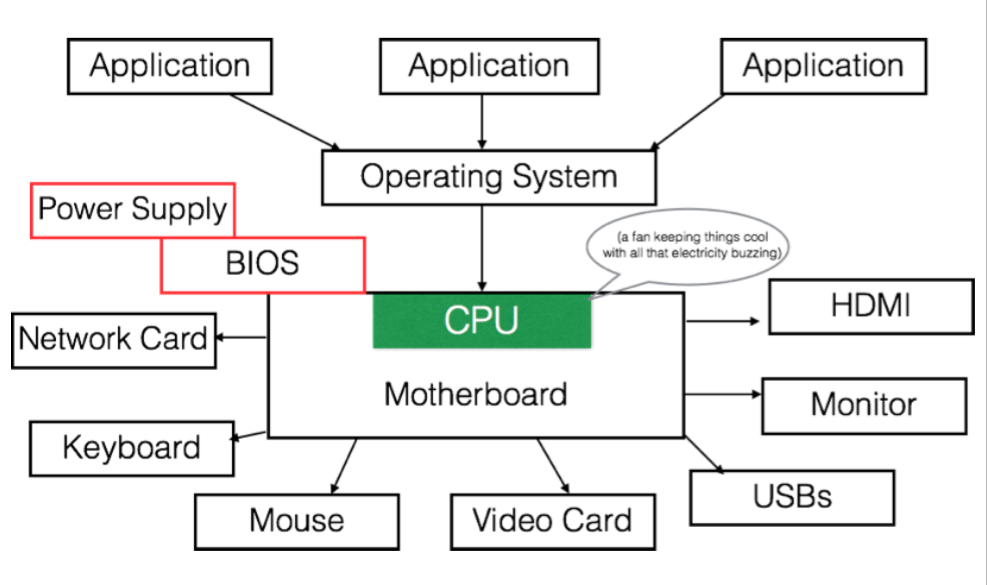Computer Files
Remember: A computer file is a resource for storing information, which is available to a computer program and is usually based on durable storage.
A file is "durable" in that it remains available for other programs to use after the program that created it has finished executing.
Common file extensions include EXE, DOC or DOCX, XLS, TXT, PDF, and MP3
DLH: Page 16
Computer File Format
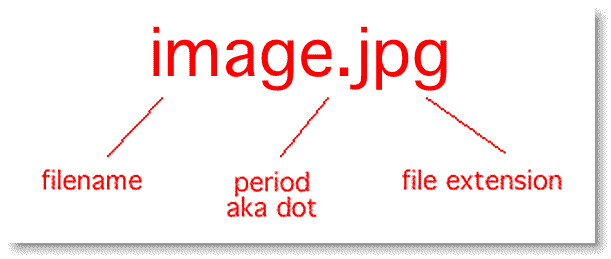Let's look at files on your computer. Click on Finder, then click on Downloads. Then identify file names and file extensions with a colleague.
Computer Folders
Computer files are housed in computer folders.
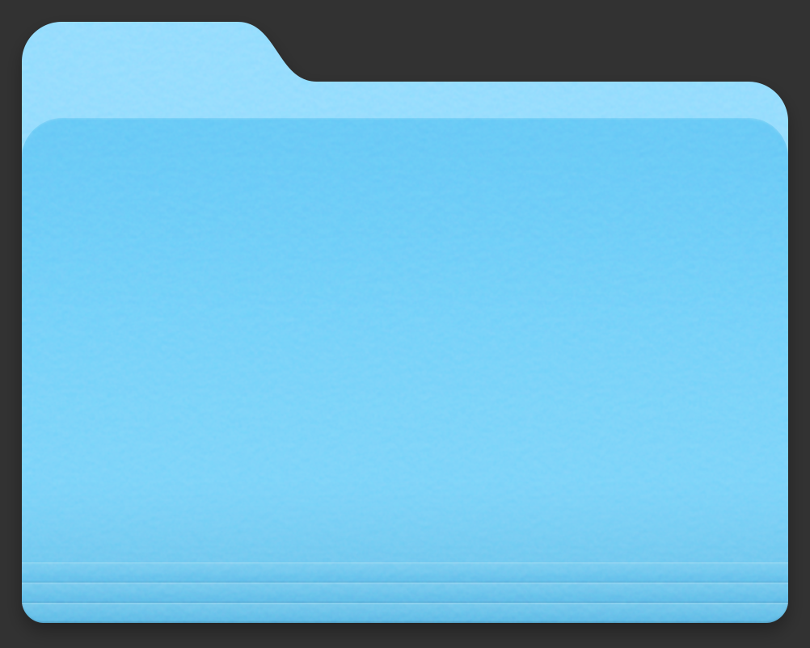Using Different Operating Systems
Now that we know how a computer works, let's learn how to navigate the two main operating systems: Mac and Windows. AND learn how to operate some of the most useful software products/applications.
Apple

Apple is an American technology company headquartered in Cupertino, California.
Its hardware products include the iPhone smartphone, the iPad tablet computer, the Mac personal computer, the iPod portable media player, the Apple Watch smartwatch, and the Apple TV digital media player.
Apple's consumer software includes the macOS and iOS operating systems, the iTunes media player, and the Safari web browser.
It's online services include the iTunes Store, the iOS App Store and Mac App Store, and iCloud.
Using the Mac OS X
Important Components of the OS
- Desktop
- Finder
- Spotlight
- Dashboard/Launchpad
- Users
- The Dock
DLH: Page 17
Inside the Folder System
- Applications
- Library
- System
- Users
- Home Folder
The Home Folder
- Desktop
- Downloads
- Movies, Pictures, Musics
- Documents
- Public
What Really Happens When You Install An Application?
- Click on this link. (What does this app do?)
- Download the file. (What type of file is it?)
- Open the Downloads folder. (Remember how to find it?)
- Click on the file and follow the prompts (What are you being asked?)
- Check to see if the application is in your Applications folder.
- If not, drag the file to your Applications folder (What is happening here?)
System Preferences and Key Shortcuts: Your New Friends
A tour through the customizable features
Remember! The keys (and names for keys) on a Mac are different from other computers.
Apple Specific Application Software
- iTunes
- Messages
- Keynote
- FaceTime
- Garage Band
- iMovie
- iBooks
- Notes
- Using your Apple ID
Software Updates
What you need to know:
- Current Version: Mac OSX Big Sur
- When to update: Whenever you are prompted by the Apple Store. (Note: when an upgrade is released, there may be bugs, so check regularly to see if there are fixes. New upgrades also take memory.)
- Where to find the updates: In the App Store (in your dock), there is a tab for Updates.
Understanding The Mac Keyboard
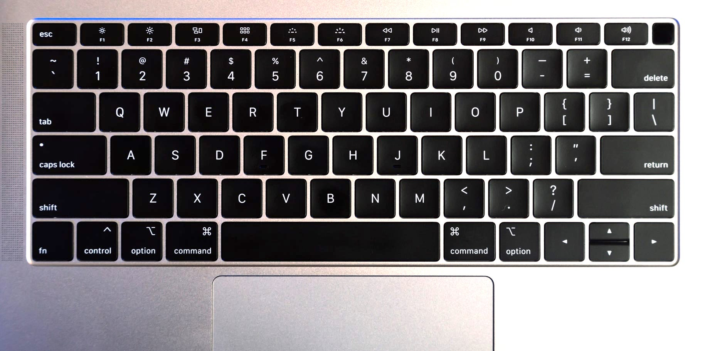Review
DLH: Page 21
Microsoft (Windows Operating System)
Microsoft, an American multinational technology company, headquartered in Redmond, Washington.
Its best known software products are the Microsoft Windows line of operating systems, Microsoft Office Suite, and Internet Explorer and Edge web browsers.
Its flagship hardware products are the Xbox game consoles and the Microsoft Surface tablet lineup.
DLH: Page 24
Personal Computers (PCs)
HP, Dell, Lenovo, Toshiba, Apex, IBM
Companies that make CPUs: Intel, AMD, VIA
Windows 7 Operating System
Important Components of the OS
- Desktop
- Start Menu
- Windows Explorer
- Control Panel
- Windows Installer
Windows System: Files and Hard Drives
- Favorites
- Desktop
- Downloads
- Recent Places
- Libraries
- Documents
- Musics, Pictures, Videos
- Home Group, Network
- Computer
Windows Specific Application Software
- Windows Media Player
- WordPad
- Paint
- Adobe Reader
- Photo Pro Tools
- Windows Movie Maker
Software Updates
What you need to know:
- Current Version: Window 10 (our system's on Windows 7)
- When to update: When you would like. (Note: upgrades are about $120, and Windows 10 has a much different user interface than 7.)
- Where to find the updates: In the Windows store or online.
- More training here
Understanding The PC Keyboard
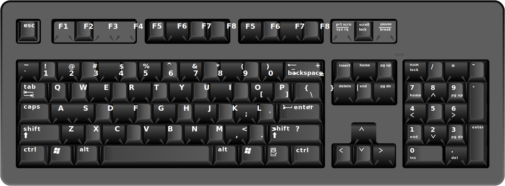Review
DLH: Page 26
Other types of devices
- Phones
- Tablets
- Watches
- Alexa/Google Home
- Internet of Things 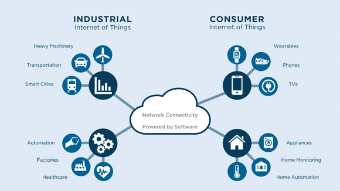
THE END
Thank you for your attention!